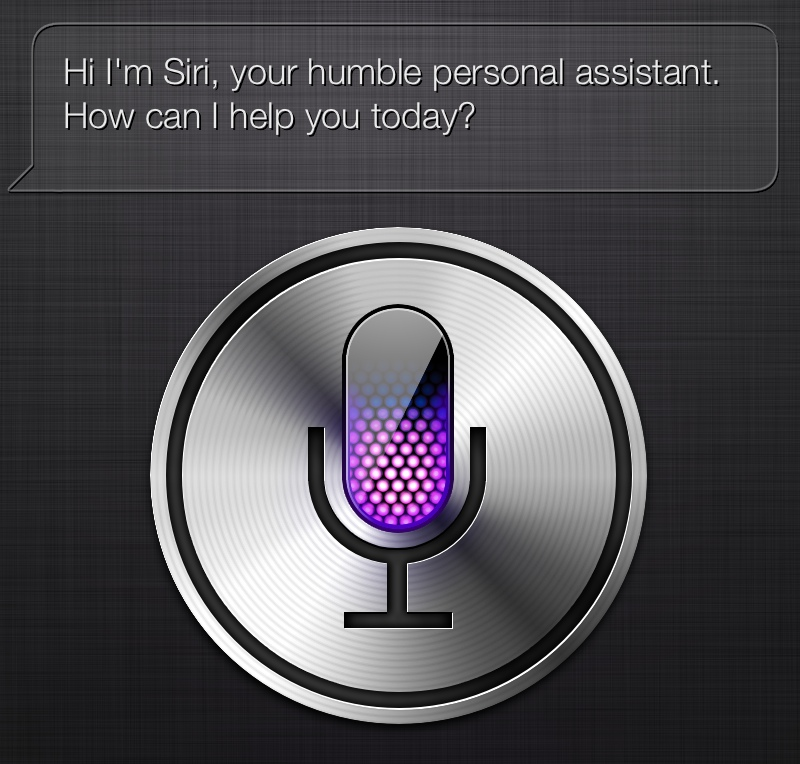
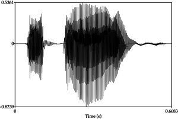
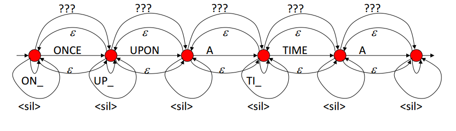

Recognizing Speech
Python & more
Anoop Hallur
Today's Talk
What is it?
Why we need?
How do we do it?
Current Practices
More !!
What is speech recognition ?
What is it ?
1. Machine understands what you speak

What is it ?
2. What you dont speak
What is it ?
3. Other sounds too

What is it not . .
Does not deal with ultrasonic wavelength
Only human audible sounds are under study now
Why do we need it ?
Dont you want that in your app too ??
Why do we need it ?
You have recorded a large data set of radio / recordings and want to generate the transcripts of the recordings (Analyze it)
Many more applications .
How do we do it ?
We want this in our app
Lets see how it works
Pure JS
window['webkitSpeechRecognition'] // enabled browser
var recognition = new webkitSpeechRecognition();
recognition.onstart = function () {...};
recognition.onerror = function () {...};
recognition.onend = function () {...};
recognition.onresult = function () {...};
Whats wrong with this
1. It works only if human is speaking in person to the device
2. Works only in chrome
3. Does not work offline
Need something better
Alternative
You can still use google speech API, and get what you want
Use it from your server
Upload
HTTP Post : www.google.com/speech-api/v2/recognize
Audio Data with its format info
API Key
More on API Keys
Now whats the problem?
Limits: presently 50 per day
Now whats the problem?
Did you notice ? en_US . All languages are not yet covered
Consider this sound
Whats should the API do ??
Consider a game
You have to find who among these two has made the sound
Problem?
We have not modelled the cat and dog sounds sufficiently
Lets do it !!
How?
Speech is also data, can be treated similar to text data (only analogy)
Problem is reduced to classifier problem
Can be solved effeciently by any one of the machine learning technique
https://github.com/anooprh/PyOhio-Prsesentation/tree/master/catDogGame
Slightly more challenging
A single digit recognizer
Why more challenging --> Prediction has to be 1/10 values
Why do this --> A live demo
Notice the pattern ?
Example 1 : 2 voices(2 acoustic models), 1 sound (1 language model)
Example 2 : 1 voice(1 acoustic model), 2 sounds (language models)
What we want to recognize boils down to these two parameters
Acoustic and Language Models
In English : large number of speakers and 44 phonemes (basic sounds)
All recognizers have different formats and specifications
Its a mess !!
In English : large number of speakers and 44 phonemes (basic sounds)
Language model example
Finite State Grammar
Language model example
Finite State Grammar
FSG_BEGIN
NUM_STATES 5
START_STATE 0
FINAL_STATE 4
TRANSITION 0 1 0.9 ONCE
TRANSITION 0 0 0.01 ONCE
TRANSITION 1 2 0.9 UPON
TRANSITION 1 1 0.01 UPON
...
...
FSG_END
pocketsphinx_continuous
-hmm /usr/share/pocketsphinx/model/hmm/en_US/hub4wsj_sc_8k
-fsg princess-minus-START_.fsg
-dict HUB-CAPS4.5000.DIC
Remember 3 problems we had before?
1. It works only if human is speaking in person to the device
2. Works only in chrome
3. Does not work offline
Other Challenges
End pointing - determining where the word ends
Background noise
Puffing / breathing sound
Many more